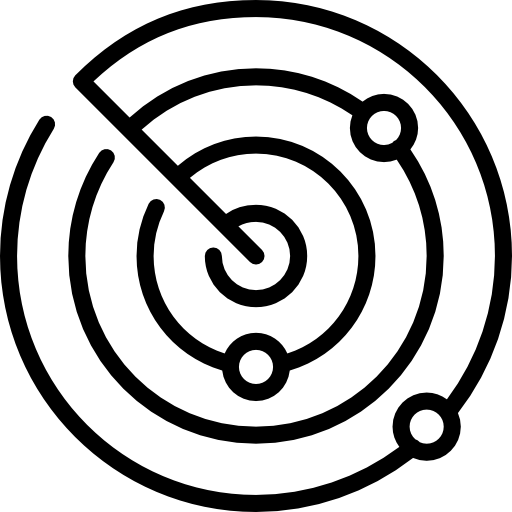

Todo inicia con curso fitness de batalla o coloquialmente llamado sigue al líder y consiste en carreras de 5 kilómetros. También se les enseña a como guiarse con brujillas y mapas, esto es durante las primeras semanas, pero solo es un calentamiento para las siguientes semanas.
Al iniciar la cuarta semana se inicia lo que coloquialmente es llamado sigue al líder y consiste en subir y bajar las colinas de gales, cargando con todo el equipo táctico con que puede llegar a pesar entre 18 y 28 kilos y en estas a veces incluyen caminatas nocturnas
ETAPA 2
La segunda etapa es la fase de entrenamiento en selva, en esta etapa los soldados aprenden lo básico para poder sobrevivir en este tipo de climas selváticos, se les enseña, tácticas de despeje de área, patrullaje, demolición, ejercicios de contacto, despejar zonas de aterrizaje supervivencia básica y otras cosas mas.
Después de este entrenamiento se les deja varias semanas en la selva con los conocimientos ya adquiridos durante esta parte del curso y cabe recalcar que los ambientes no son controlados, el objetivo de este entrenamiento es eliminar a losa gentes que no puedan hacer patrullajes en este tipo de terrenos
Si los reclutas ya han llegado hasta aquí, pasan a la tercera y última fase de selección

TERCER Y ULTIMA ETAPA
conocida como escape, evasión y cuestionamiento táctico, debido a que en las misiones siempre puede salir algo mal, los aspirantes
deben saber que hacer en caso de ser capturado e interrogados y para ello se les pueden dar
platicas y lecciones con exprisioneros de guerra o integrantes de las fuerzas especiales que estuvieron en esa situación en el mundo real..
Al avanzar a los aspirantes se les deja en campo abierto durante tres días y tienen que llegar a un punto de control sin ser vistos por los instructores, como todos son novatos, la mayoría de la veces son capturados y empieza la fase del cuestionamiento
táctico y aquí es donde se demuestra si los futuros miembros del SAS son capaces de resistir a un posible interrogatorio.
Si el operador llego hasta el final, es compensado con la boina con el logo distinguido del SAS y es cuando son asignados a sus respectivos batallones